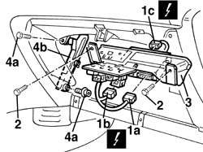
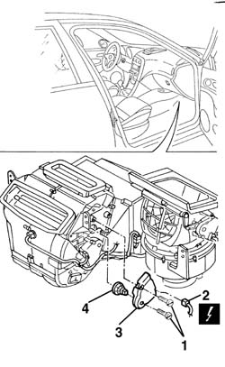
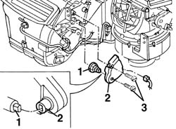
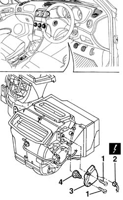
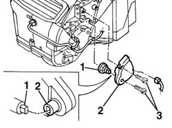

5040D76 air contitioner distribution flap control motor - r r
- Path
- Procedures > 50 AUXILIARY UNITS > 5040 AIR CONDITIONING CASING AND COMPONENTS > 5040D air conditioner controls > 5040D76 air contitioner distribution flap control motor - r r
- Kind
- repair procedure (removal / refitting; the operation number is the code)
- Applies to
- all engines; all production periods
- Interactive page
- https://sloeber94.github.io/elrnDB-a156/en/#/3238349
Applies to: all engines; all production periods; only with equipment: Air Conditioner
 Removing
Removing
 Refitting
Refitting7040G24 switch for facia compartment light - r+r
7040G20 facia compartment light bulb holder - r+r
7040A14 flap of glove compartment trim element (one) - arrange
7040A09 passenger air bag compartment cover - r r
5580C22 AIR BAG MODULE - Passenger side - R.R.
1. Disconnect integrated services control unit electrical connections (1a), (1b), (1c).
 | Name | Connector |
|---|---|---|
1a | Integrated services control unit |
| Name | Connector |
|---|---|---|
1b | Integrated services control unit |
| Name | Connector |
|---|---|---|
1c | Integrated services control unit |
2. Undo the bolts fixing the control unt and relay mounting bracket.
3. Move the control unit and relay mounting bracket.
4. Undo the bolts (4a) and move the dashboard bracket (4b) slightly.

Applies to: all engines; all production periods; only with equipment: Air Conditioner
1. Unscrew the bolts
2. Disconnect the electrical connections.
| Name | Connector |
|---|---|---|
2 | Air distribution actuator |
3. Remove the motor by disconnecting it from the engine shaft.
4. If necessary, remove the motor shaft.

Applies to: all engines; all production periods; only with equipment: Air Conditioner
Refitting
RemovingCheck that the motor is undamaged.
1. Refit the motor shaft, if it was removed.
2. Refit the motor.
To facilitate connection of the motor shaft to the motor, reconnect the electrical connection and turn the actuator by operating the control on the facia until it is aligned with the shaft.
3. Tighten the screws.

Applies to: all engines; all production periods; only with equipment: Air Conditioner
Position the dashboard bracket and tighten the bolts.
Refit the control unit and relay bracket.
Tighten the bolts fixing the control unit and relay holder bracket.
Connect the electrical connections to the integrated services control unit.
5580C22 AIR BAG MODULE - Passenger side - R.R.
7040A09 passenger air bag compartment cover - r r
7040A14 flap of glove compartment trim element (one) - arrange
Applies to: all engines; production: da 03/02 a 09/03, da 10/03; only with equipment: Air Conditioner
Removing
Refitting7040G24 switch for facia compartment light - r+r
7040G20 facia compartment light bulb holder - r+r
7040A65 passenger compartment box lock , one , r r (left and right sides)
7040L37 gear lever plate - r r
5040D18 air conditioner control unit - r r
7040A25 central facia trim - r r
5560C51 combined analogue control panel - r+r or replace
5010C24 upper air outlet on facia - r r
5010C12 Windscreen demising VENT - R.R.
7040A44 facia lh side cover - r r
7040A45 facia rh side cover - r r
7040A09 passenger air bag compartment cover - r r
5580C22 AIR BAG MODULE - Passenger side - R.R.
5540C18 headlamp/light cluster alignment correction motor switch - r+r
4110A11 steering wheel - r+r for replacement or check for versions with air bag
7040A26 steering column trim - r+r
5550A12 complete stalk unit - r+r for versions with air bag
7040A10 instrument facia trim - r+r
5040D70 air distribution flap control motor with facia removed
Applies to: all engines; production: da 03/02 a 09/03, da 10/03; only with equipment: Air Conditioner
Refitting
Removing5040D70 air distribution flap control motor with facia removed
7040A10 instrument facia trim - r+r
5550A12 complete stalk unit - r+r for versions with air bag
7040A26 steering column trim - r+r
4110A11 steering wheel - r+r for replacement or check for versions with air bag
5540C18 headlamp/light cluster alignment correction motor switch - r+r
5580C22 AIR BAG MODULE - Passenger side - R.R.
7040A09 passenger air bag compartment cover - r r
7040A45 facia rh side cover - r r
7040A44 facia lh side cover - r r
5010C12 Windscreen demising VENT - R.R.
5010C24 upper air outlet on facia - r r
5560C51 combined analogue control panel - r+r or replace
7040A25 central facia trim - r r
5040D18 air conditioner control unit - r r
7040L37 gear lever plate - r r
7040A65 passenger compartment box lock , one , r r (left and right sides)
Applies to: all engines; all production periods; only with equipment: Right hand drive and Air Conditioner
Removing
Refitting7045A10 l/h or r/h front seat (one) - r+r (driver's side)
1. Undo the bolts.
2. Disconnect the electrical connection.
| Name | Connector |
|---|---|---|
2 | Air distribution actuator |
3. Remove the motor by disconnecting it from the engine shaft.
4. If necessary, remove the motor shaft.

Applies to: all engines; all production periods; only with equipment: Right hand drive and Air Conditioner
Refitting
RemovingCheck that the motor is undamaged.
1. Refit the motor shaft, if it was removed.
2. Refit the motor.
3. Tighten the bolts.

Applies to: all engines; all production periods; only with equipment: Right hand drive and Air Conditioner
7045A10 l/h or r/h front seat (one) - r+r (driver's side)
Topics linked from this page (35)
- 4110A11 steering wheel - r+r for replacement or check for versions with air bag
- 5010C12 Windscreen demising VENT - R.R.
- 5010C24 upper air outlet on facia - r r
- 5040D18 air conditioner control unit - r r
- 5040D70 air distribution flap control motor with facia removed
- 5540C18 headlamp/light cluster alignment correction motor switch - r+r
- 5550A12 complete stalk unit - r+r for versions with air bag
- 5560b02 kilometre/mileometer - r r
- 5560B03 rev counter - r r
- 5560C51 combined analogue control panel - r+r or replace
- 5560C60 anomaly display - r+r
- 5570T80 car radio unit - r+r
- 5580C air bag system
- 5580C18 air bag module - r+r
- 5580C22 AIR BAG MODULE - Passenger side - R.R.
- 7040A09 passenger air bag compartment cover - r r
- 7040A10 instrument facia trim - r+r
- 7040A14 flap of glove compartment trim element (one) - arrange
- 7040A25 central facia trim - r r
- 7040A26 steering column trim - r+r
- 7040A31 flap assembly - r r
- 7040A37 fuse box cover - r r
- 7040A44 facia lh side cover - r r
- 7040A45 facia rh side cover - r r
- 7040A65 passenger compartment box lock , one , r r
- 7040G20 facia compartment light bulb holder - r+r
- 7040G24 switch for facia compartment light - r+r
- 7040L20 tunnel trim - r r
- 7040L37 gear lever plate - r r
- 7045A10 l/h or r/h front seat (one) - r+r
- 7065C42 ashtray (one) r+r
- M40A Integrated services control unit ( REAR )
- M40B Integrated services control unit ( REAR )
- M40C Integrated services control unit ( FACIA )
- N80 Air distribution actuator